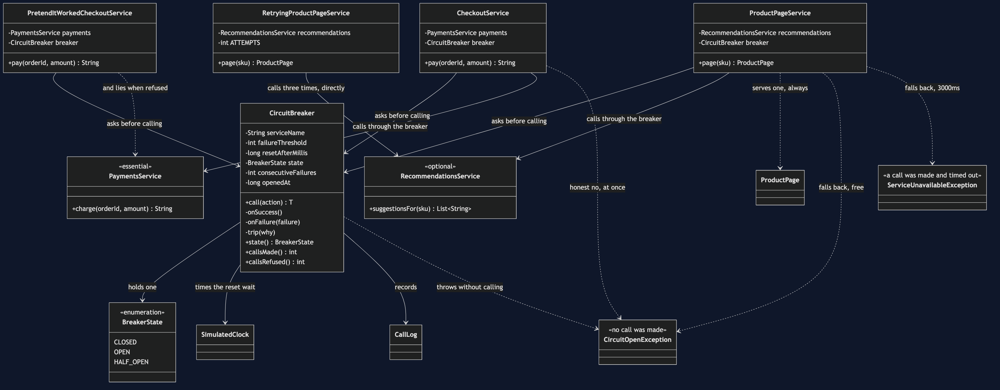
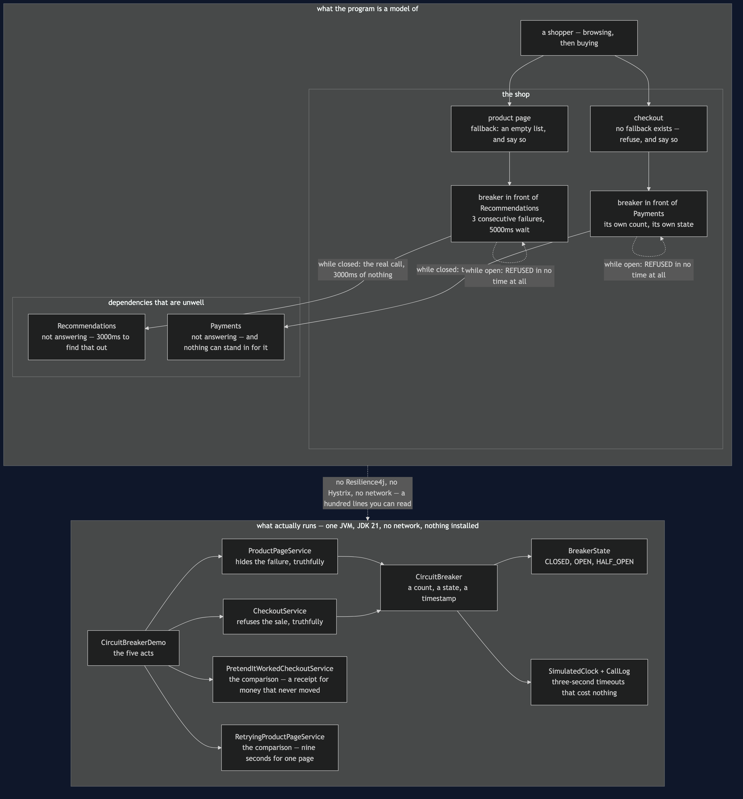
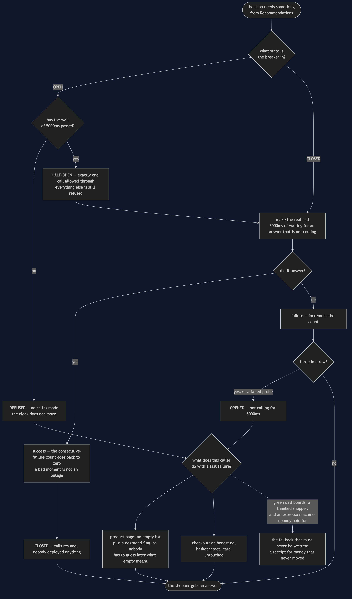
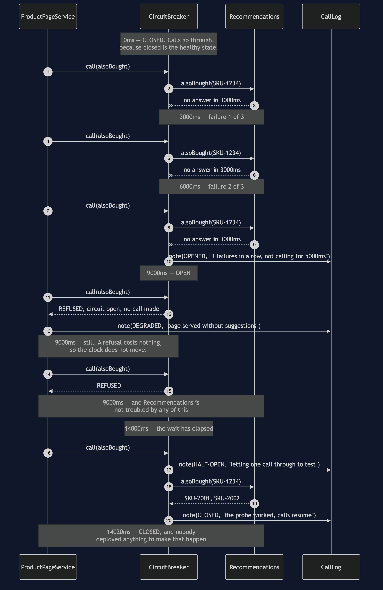
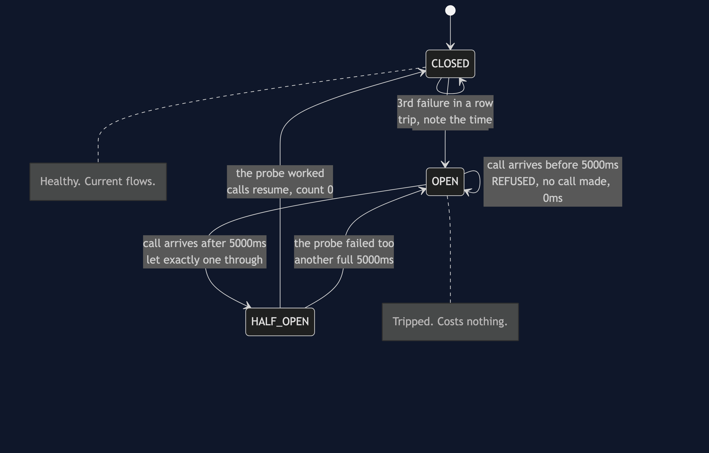
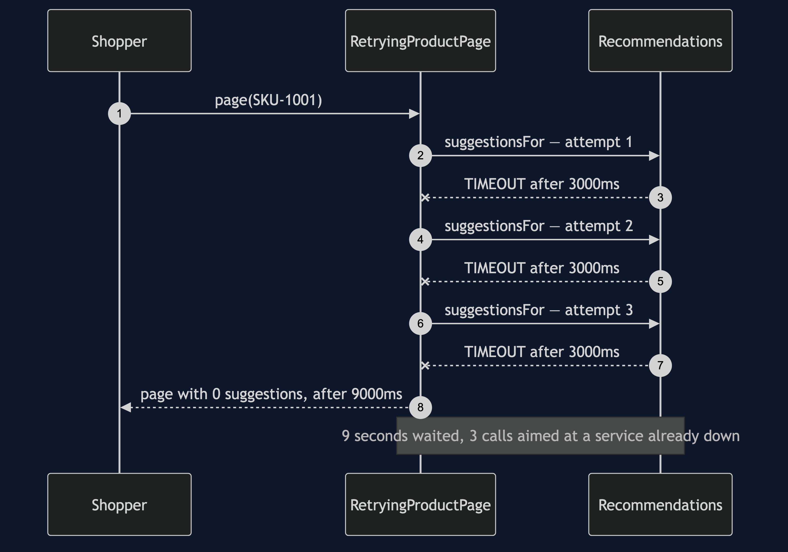
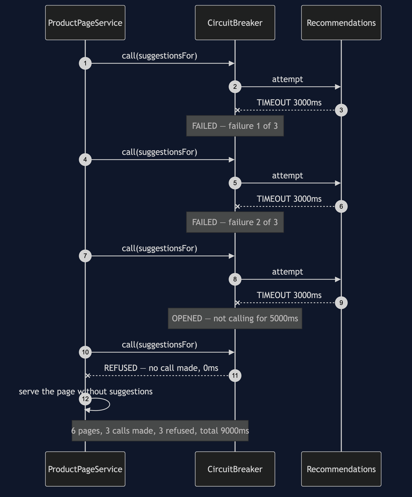
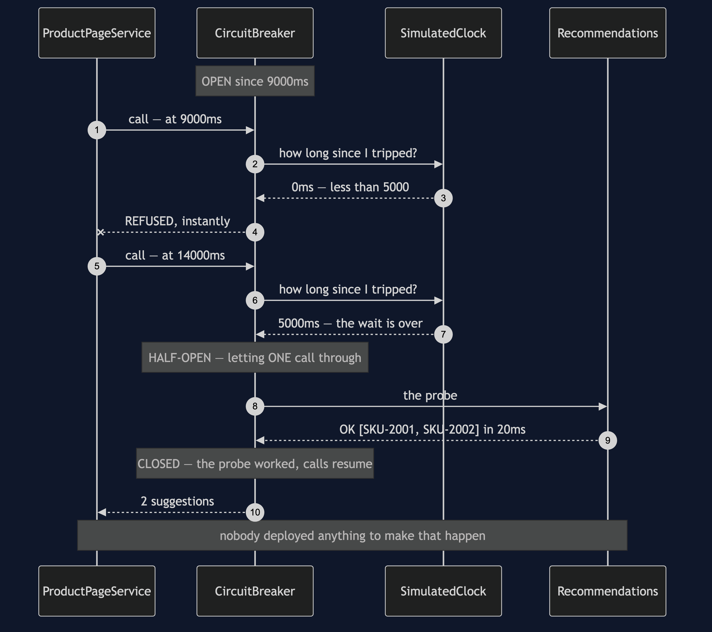
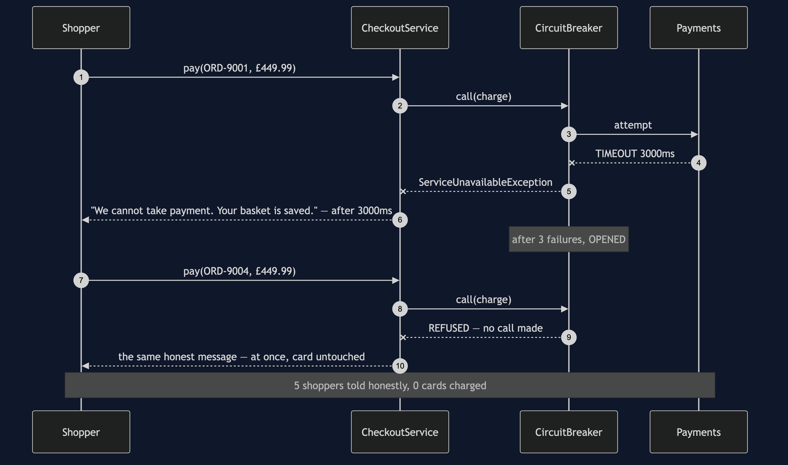
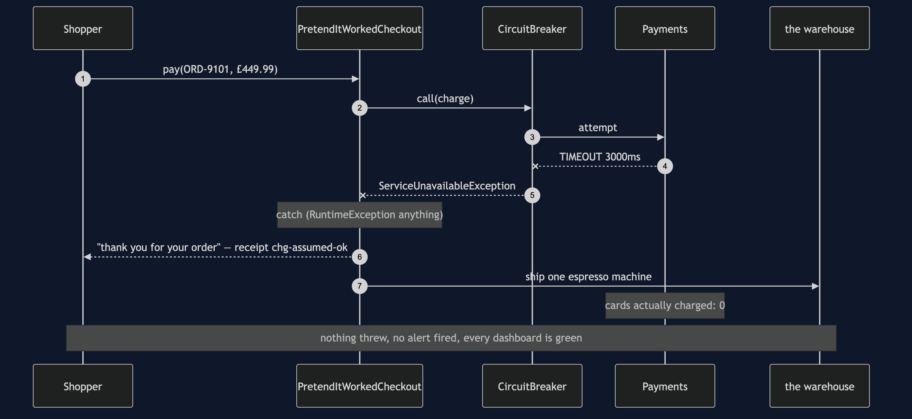

Circuit Breaker
In plain words: count the failures. Once a service has failed enough times in a row, stop calling it altogether for a while and fail instantly instead — then let one call through later to see whether it has recovered.
Everyday analogy: the fuse box in a house, which is where this pattern gets both its name and its three states. When something is badly wrong the fuse trips, and it stays tripped. The point is not to punish the appliance; it is to stop the fault setting the house on fire. Later somebody flips the switch back on to see whether the problem has gone. If it has, everything runs. If it has not, it trips again straight away.
One piece of vocabulary, and it reads backwards: closed is the healthy state. A closed circuit is one where current flows, so calls go through. An open circuit breaker is the broken-looking one.
In the shop, Recommendations has stopped answering. It does not fail quickly — every call takes the full three-second timeout before giving up. So the product page is three seconds slower for a feature nobody would miss, and for those three seconds a thread that checkout needs is sitting idle waiting for an answer that is not coming.
Retry is the wrong tool here
0ms -> 3000ms Recommendations TIMEOUT no answer in 3000ms
3000ms -> 6000ms Recommendations TIMEOUT no answer in 3000ms
6000ms -> 9000ms Recommendations TIMEOUT no answer in 3000ms
the shopper waited 9000ms for a page with nothing extra on it,
and a service that is already down received 3 more calls.Nine seconds, and three times the traffic aimed at a service that is already on its knees. Ten shoppers make that ninety seconds and thirty calls — a test asserts both numbers.
The question that separates the two patterns: is the next attempt plausibly going to work? For a dropped connection, yes — retry. For a service that has failed the last twenty calls, no — break.
What the breaker does instead
0ms -> 3000ms Recommendations TIMEOUT no answer in 3000ms
3000ms -> 6000ms Recommendations TIMEOUT no answer in 3000ms
6000ms -> 9000ms Recommendations TIMEOUT no answer in 3000ms
9000ms -> 9000ms Recommendations OPENED 3 failures in a row, not calling for 5000ms
9000ms -> 9000ms Recommendations REFUSED circuit open, no call made
9000ms -> 9000ms ProductPage DEGRADED page served without suggestions, no call made
6 pages served, every one of them buyable, none with suggestions
3 calls reached Recommendations, 3 were refused without a call
total time 9000msRead the timestamps on the last few lines: they do not move. Once the breaker is open, a page costs nothing to serve. The first three shoppers paid for the outage and everybody after them got their page instantly. A test takes this further — twenty more pages after the trip, and the clock does not advance by a single millisecond.
Note also the word consecutive in the rule. One success resets the count, because a service that answers three times and fails once is not down; it is a service having a bad moment, and retry already handles that.
Recovering without anybody deploying anything
9000ms -> 9000ms Recommendations REFUSED circuit open, no call made
14000ms -> 14000ms Recommendations HALF-OPEN letting one call through to test
14000ms -> 14020ms Recommendations OK [SKU-2001, SKU-2002]
14020ms -> 14020ms Recommendations CLOSED the probe worked, calls resume
state: CLOSED -- nobody deployed anything to make that happen.Five seconds after tripping, exactly one call is let through. That is the half-open state: the fuse being flipped back to see what happens. If the probe works, the breaker closes and normal service resumes. If it fails, the breaker opens again for another full wait — and one failed probe is enough, it does not need to reach the threshold a second time.
The half everybody skips: what to do while it is open
A breaker is not a device for making failures disappear. It is a device for failing quickly. What that speed buys you differs completely by dependency, and this project shows both.
Recommendations — hide it, and say so. The page goes out with no suggestions and a degraded flag set. That flag matters: it means nobody has to guess later whether an empty list meant "we had none" or "the service was down".
Payments — refuse, and say so.
9000ms -> 9000ms Payments REFUSED circuit open, no call made
9000ms -> 9000ms Checkout HONEST-NO told the shopper at once, card untouched
5 shoppers were told honestly that we cannot take payment
0 cards were chargedThere is no substitute for taking the money, so there is no fallback to buy here. What the breaker buys instead is a clear message in a hundredth of a second rather than a spinner for three seconds — and it stops a thousand shoppers each spending three seconds discovering the same outage, with a thousand blocked threads between them.
The fallback that must never be written
3000ms -> 3000ms Checkout PRETENDED returned a receipt for money that never moved
the shopper was shown receipt chg-assumed-ok and thanked
cards actually charged: 0PretendItWorkedCheckoutService is built exactly like CheckoutService and differs in one respect: when Payments cannot be reached it returns a made-up receipt. Every dashboard goes green, the shopper is thanked, no exception is thrown, no alert fires, and the warehouse ships an espresso machine nobody paid for.
It exists because "add a fallback" is the advice that comes attached to this pattern, and it is only good advice when there is something true to fall back to. An empty list of suggestions is true. A receipt for money that never moved is not. A fallback that hides a real failure is worse than the error it replaced — the error would have been noticed in seconds; this will be noticed at the end of the month.
The honest cost
A breaker adds state, tuning, and a new way to be wrong. Too sensitive and it opens on a blip, cutting off a service that was fine. Too slow and it never opens at all, so you have the complexity and none of the protection. And it forces you to answer "what do we do while it is open?" for every single dependency — which is real design work, not configuration.
Run it
./gradlew run # five acts
./gradlew test # 26 testsThe tests are the proof
CircuitBreakerTest— the three states and every transition between them, including that it stays open right up to the last millisecond of the wait, that a failed probe restarts the wait from the probe rather than the original trip, and that one success resets the failure count.FallbackChoiceTest— twenty pages after the trip cost zero milliseconds and zero calls; ten pages cost three timeouts, not ten; checkout refuses with the basket intact and no card charged; and the lying fallback is pinned by a passing test asserting that the shopper was thanked and charged nothing.RetryingProductPageServiceTest— nine seconds for one page, ninety for ten, and a side-by-side assertion against the breaker's nine and three.DemoRunsTest— the demo is teaching material, so a test keeps it working.
No test sleeps. Three-second timeouts and five-second waits cost nothing, because SimulatedClock only moves when something moves it.
One JVM, no infrastructure
No Resilience4j, no Hystrix, no network, no Docker. The breaker is about a hundred lines and you can read all of it. Everything you need is a JDK.
Technologies and versions
Nothing here is a range and nothing is latest: a course that worked last year and does not work today is worse than one that never took the dependency.
| What | Version | Why it is here |
|---|---|---|
| Java | 21 | The repository standard, requested through the Gradle toolchain block |
| Gradle | 9.2.1 | The wrapper in this directory; no separate install needed |
| JUnit 5 | 5.10.2 | The 26 tests, through junit-bom so the Jupiter artefacts cannot disagree |
That is the entire list, and the short version of it is the point. This project has no runtime dependency at all — the dependencies block in build.gradle names nothing but JUnit, and JUnit is testImplementation. There is no Resilience4j, no Hystrix, no metrics library and no container. Every one of the twelve projects in this category is built the same way, so a reader who can run one can run all of them, offline, with a JDK and nothing else.
Where this sits
Retry (the previous project) handles a blip; this handles an outage. They are complements, not rivals, and the usual production arrangement is both — a retry inside a breaker, so a dropped connection is retried and a dead service is left alone. The pattern after this one, the bulkhead, attacks the same problem from the other end: instead of refusing to call the broken thing, it makes sure the threads waiting on it were never the threads checkout needed.
Learning Material
| Document | What it covers |
|---|---|
docs/problem-statement.md | A service that stopped answering, and the retry loop that turns a broken feature into a nine-second page |
docs/circuit-breaker-pattern-explained.md | The pattern from a fuse box, the vocabulary that reads backwards, and the half that gets left out |
docs/class-diagram.md | The structure, and the arrows that are missing — the breaker has never heard of shopping |
docs/architecture-diagram.md | Where the breakers sit, why there are two of them, and what each one is protecting |
docs/data-flow-diagram.md | One call end to end: the fork at the top, why a refusal is free, and the fallback that must never be written |
docs/sequence-diagram.md | The trip and the recovery in call order, with the clock — nine seconds paid once, then nothing |
docs/uml-diagram.md | The state machine, then all five acts as sequences |
docs/animation.html | The three states, the refusals and the probe, one step at a time, in a browser |
docs/prerequisites.md | What you need to know, what you explicitly do not, and 60-second primers on the states and on fallbacks |
docs/session.md | A one-hour taught session with exercises |
docs/spec.md | The generated specification, with measured test counts and timings |
docs/youtube.md | Title, description and chapters for the video |
video/README.md | The video pipeline, the scene list, and how to rebuild it |
The pattern in one picture
The class diagram, and the thing to look for is what CircuitBreaker depends on. It depends on a clock and a count. It has never heard of shopping, which is why one class serves both the product page and checkout.

What runs where
The lower half is the literal truth: one JVM, about a hundred lines of breaker. The upper half is what it models — two unwell dependencies, two breakers, and two completely different answers to "what do we do while it is open?".

How the data moves
One call end to end. The fork at the top decides whether anything leaves the building at all, and the fork at the bottom is the design work: what a fast failure should become.

Who calls whom, in order
The trip and the recovery as one story, with the clock down the side. Nine seconds paid once, then a run of refusals that cost nothing, then a single probe at 14000ms.

The state machine and all five acts
The full set from docs/uml-diagram.md, in the order that document argues them.
One. The state machine. Three states and every transition between them — including the one people forget, where a single failed probe re-opens the breaker.

Two. Retry, applied to an outage. Nine seconds for one page with nothing extra on it, and three more calls aimed at a service already on its knees.

Three. Six pages, with a breaker. Three shoppers pay for the outage. The timestamps then stop moving.

Four. It lets itself back in. One probe, five seconds after the trip, and normal service resumes with nobody deploying anything.

Five. Checkout, where there is no fallback. Nothing can stand in for taking the money, so the breaker buys an honest answer in a hundredth of a second instead.

Six. The fallback that lies. A receipt for money that never moved, green dashboards, a thanked shopper, and an espresso machine nobody paid for.

Video
The narrated walkthrough is built from video/scenes.py by video/build_video.sh. It runs about eighteen minutes across sixteen scenes, and the rendered file is not committed — see the repository README for why — so producing it takes about ten minutes on macOS.
Also available with a framework
Circuit Breaker with Resilience4j Pattern reruns this idea on a real framework, and shows what the framework adds and where it can undo the pattern. Watch this project first.